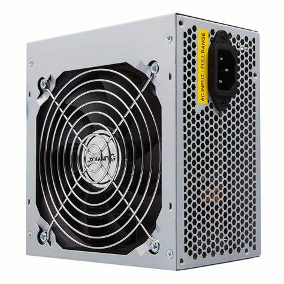

TECNOLOGICO NACIONAL DE MEXICO
INSTITUTO TECNOLOGICO DE SALTILLO
INGENIERIA EN SISTEMAS COMPUTACIONALES
UNIDAD 3
3.1 Chipset
Un chipset es un conjunto de componentes electrónicos que gestionan el flujo de datos entre el procesador, la memoria, y los periféricos.
3.1.1 CPU
Rendimiento - Nucleos: Los núcleos de un microprocesador, también conocidos como unidades de procesamiento (CPUs), realizan lectura y ejecución de instrucciones, las cuales, aunque son instrucciones ordinarias, son paralelizadas en la ejecución. Los multiprocesadores ser homogéneos o heterogéneos: los homogéneos tienen núcleos idénticos, y los heterogéneos tienen núcleos diferentes.
Según el diseño, los núcleos de un microprocesador pueden estar estrechamente acoplados o no: cuando lo están, comparten caché y memoria y suelen ser más rápido.
Rendimiento - Cache: Considerando que la velocidad de los procesadores aumenta más rápido que la velocidad de la memoria, la optimización del procesamiento mediante caché es bastante importante para procesadores de alta gama, de lo contrario se tendrá un cuello de botella.
El caché usa RAM estática, es decir, memoria cuyas celdas de memoria utilizan flip-flops, que son más rápidas pero más caras. El caché disminuye la latencia y mejora el rendimiento (ancho de banda) del procesador.
Hay 3 niveles de caché: L1, L2, L3, donde el L1 es el más rápido y de menor tamaño, mientras que el L3 es el más lento y de mayor tamaño.
Rendimiento - Frecuencia: Un generador de reloj es un circuito que produce una señal periódica que sincroniza al circuito y su funcionamiento.
La velocidad de reloj o frecuencia del procesador se refiere a la velocidad a la cual el generador de reloj del procesador genera pulsos, los cuales son indicadores de la rapidez del procesador y sus operaciones.
Es decir, la frecuencia de un procesador es un indicador de su velocidad, de la cantidad de operaciones que hace por segundo. Específicamente, la frecuencia, medida en Hz, indica cuántos pulsos eléctricos afectan a un microprocesador por segundo.
No obstante, aunque mayor frecuencia implica mayor velocidad de procesamiento, se deben tomar en cuenta la optimización de estos, ya sea por segmentación de instrucciones como por núcleos múltiples.
3.1.2 Controlador de bus
Un controlador de bus es un componente clave en la arquitectura de una computadora que se encarga de coordinar y gestionar la comunicación entre los diferentes componentes de hardware que se conectan al bus. El controlador de bus establece protocolos de comunicación, controla el flujo de datos, gestiona interrupciones y asigna recursos de hardware, asegurando que los diferentes componentes de hardware puedan comunicarse de manera efectiva y coordinada.
El controlador de bus es un componente clave en la arquitectura de una computadora y es esencial para el funcionamiento de la misma. Sin embargo, en términos prácticos, no es un componente que los usuarios finales deban considerar al comprar piezas para una computadora.
La compatibilidad del controlador de bus con el sistema operativo y los dispositivos conectados es crucial para garantizar un funcionamiento adecuado y sin errores, pero esto es responsabilidad del fabricante del dispositivo o del chipset, y no del usuario final. Por lo tanto, al comprar piezas para una computadora, los usuarios finales deben asegurarse de que las piezas sean compatibles con su sistema operativo y otros componentes, pero no necesitan preocuparse por el controlador de bus en sí mismo.
3.1.3 Puertos de entrada y salida
Los puertos de entrada/salida son interfaces que permiten la comunicación entre dispositivos periféricos y la placa madre o chipset de un ordenador. Estos puertos pueden ser utilizados para conectar dispositivos externos, como teclados, ratones, impresoras, monitores, discos duros externos, entre otros.
En el chipset tenemos dos componentes principales, el Northbridge y el Southbridge. El Northbridge se encarga de la comunicación interna y el Southbridge de la comunicación externa.
Por lo tanto los puertos de E/S se encuentran en el Southbridge.
Existen diferentes tipos de puertos de entrada/salida, cada uno con su propia función y velocidad de transferencia de datos:
Puerto serial / RS-232: Se utiliza para conectar dispositivos de comunicación serial, como módems y dispositivos de GPS.
Puerto paralelo / LPT: utilizado para la conexión de impresoras, escáneres y otros dispositivos.
Puerto VGA: Utilizado para conectar monitores y pantallas de ordenador a la tarjeta gráfica de una computadora mediante señal analógica. Reemplazado por HDMI y DisplayPort.
DisplayPort: Utilizado para transmitir señales de audio y video de alta calidad entre dispositivos, como pantallas y monitores. Soporta resoluciones de hasta 8K y 60Hz.
HDMI: Este puerto se utiliza para conectar dispositivos de video, como monitores y televisores, a la placa madre del ordenador. HDMI puede transmitir audio y video en alta definición a 4K y 60Hz.

3.1.4 Controlador de interrupciones
El controlador de interrupciones es un componente crucial en el hardware de una computadora. Permite que el procesador sepa cuándo ocurre una interrupción y cómo manejarla. Sin el controlador de interrupciones, una computadora no podría manejar las interrupciones de manera eficiente, lo que resultaría en un mal funcionamiento del sistema.
La función principal del controlador de interrupciones es recibir señales de interrupción de dispositivos periféricos y pasarlas al procesador. El controlador de interrupciones tiene la capacidad de controlar y priorizar estas interrupciones según su importancia.
Tipos de interrupcciones:
Hardware: Son generadas por dispositivos periféricos, como el teclado o el mouse.
Software: Son generadas por el propio sistema operativo.
El controlador de interrupciones está compuesto por dos chips: el PIC maestro y el PIC esclavo. El PIC maestro es el encargado de recibir las señales de interrupción y de enviarlas al procesador, mientras que el PIC esclavo se utiliza para manejar las interrupciones de los dispositivos periféricos adicionales.
La configuración del controlador de interrupciones se realiza mediante el registro de máscara de interrupción. Este registro se utiliza para habilitar o deshabilitar las interrupciones de dispositivos periféricos específicos.
3.1.5 Controlador de Acceso Directo a Memoria
El acceso directo a memoria es una característica de las computadoras y microprocesadores modernos que permite que ciertos subsistemas de hardware dentro de la computadora puedan acceder a la memoria del sistema para la lectura y/o escritura, independientemente de la unidad central de procesamiento (CPU). De lo contrario, la CPU tendría que copiar cada porción de datos desde el origen hacia el destino, haciendo que ésta no esté disponible para otras tareas.
Caracteristicas:
-Aquellas computadoras que tienen canales DMA pueden transferir datos desde y hacia los dispositivos con menos utilización de CPU más que aquellas computadoras sin canales DMA.
-Una transferencia DMA consiste en copiar un bloque de memoria de un dispositivo a otro.
-En computadoras sin DMA, el CPU generalmente se ocupa completo durante toda la operación de lectura o escritura de la memoria y, por lo tanto, no está disponible para realizar otras tareas.
-Con DMA, el CPU puede iniciar la transferencia, luego realizar otras operaciones mientras la transferencia está en progreso y luego recibir una interrupción del controlador de DMA una vez que la transferencia termina.
-DMA es útil en aplicaciones en tiempo real y en el procesamiento de flujos de datos.

3.1.6 Circuitos de Temporización
-Un temporizador es un circuito que se encuentra en la tarjeta madre del PC y que es capaz de mantener una cuenta de tiempo basada en el reloj de la computadora.
-Un temporizador básicamente consiste en un elemento que se activa o desactiva después de un tiempo preestablecido. De esta manera podemos determinar el parámetro relacionado con el tiempo que ha de transcurrir para que el circuito susceptible de temporizarse, se detenga o empiece a funcionar o simplemente cierre un contacto o lo abra.
-Estos circuitos utilizan componentes electrónicos como capacitores, resistencias, diodos y transistores para generar señales de temporización que pueden utilizarse para realizar diversas funciones.
Aplicaciones: Los circuitos de temporización se utilizan en una amplia variedad de aplicaciones, desde la electrónica de consumo hasta la industria, y son esenciales para el funcionamiento de muchos sistemas electrónicos complejos.
Ejemplos:
-Watchdog timer: un temporizador que detecta y recupera fallas de la computadora. El temporizador se reinicia periódicamente por la computadora durante el funcionamiento normal y, si no se reinicia debido a una falla de hardware o un error de programa, genera una señal de tiempo de espera que se usa para iniciar acciones correctivas, como poner la computadora y el hardware asociado en un estado seguro e invocar un reinicio de la computadora.
-High Precision Event Timer: un temporizador que produce interrupciones periódicas con una resolución mucho mayor que el reloj en tiempo real (RTC) y se usa a menudo para sincronizar flujos multimedia, proporcionando una reproducción fluida y reduciendo la necesidad de usar otros cálculos de marca de tiempo, como la instrucción RDTSC de una CPU basada en x86
-Programmable interval timer: Un temporizador que genera interrupciones a intervalos programables por el usuario. Se usa para implementar funciones como el reloj del sistema, el generador de tonos, el controlador DMA y el controlador del teclado
-Real-time clock: Un temporizador que mantiene la fecha y la hora actuales incluso cuando la computadora está apagada. Se usa para proporcionar información de tiempo a la computadora y a las aplicaciones.

3.1.7 Circuitos de control chipset
Los circuitos de control en un chipset son aquellos componentes electrónicos que se encargan de gestionar el flujo de datos y controlar el comportamiento de los diferentes dispositivos conectados a la placa madre.
El chipset es un conjunto de circuitos integrados que incluyen una variedad de componentes electrónicos, como transistores, diodos, resistencias, capacitores, etc., diseñados para cumplir con una función específica. En el caso de los circuitos de control, estos componentes trabajan en conjunto para controlar y coordinar el flujo de datos entre el procesador, la memoria y otros dispositivos de hardware conectados a la placa madre, como discos duros, tarjetas de video, tarjetas de sonido, entre otros.
El chipset se compone principalmente de dos partes: el Northbridge y el Southbridge. El Northbridge es responsable de conectar el procesador a la memoria y a la interfaz de la tarjeta gráfica de alta velocidad, mientras que el Southbridge se encarga de conectar los periféricos más lentos, como los puertos USB, el disco duro y los controladores de red.
Los circuitos de control en un chipset son responsables de controlar y coordinar el flujo de datos entre el procesador, la memoria y otros dispositivos de hardware conectados a la placa madre, permitiendo que los dispositivos trabajen juntos de manera eficiente y efectiva.
3.1.8 CONTROLADORES DE VIDEO
Los controladores de video son componentes esenciales en cualquier dispositivo que tenga una pantalla. Se encargan de enviar la información gráfica desde el procesador a la pantalla, asegurando que las imágenes se muestren correctamente y sin interrupciones. A medida que las pantallas han evolucionado, también lo han hecho los controladores de video. Ahora son capaces de soportar resoluciones más altas, tasas de refresco más rápidas y colores más precisos, lo que permite una experiencia visual impresionante.
Existen dos tipos principales de controladores de video: integrados y dedicados. Los controladores integrados se encuentran dentro del procesador y comparten la memoria RAM con otros componentes del sistema. Son adecuados para tareas básicas como navegación web y edición de documentos, pero no son lo suficientemente potentes para juegos o aplicaciones gráficas intensivas.
Por otro lado, los controladores dedicados tienen su propia memoria y procesador, lo que les permite manejar gráficos complejos sin afectar el rendimiento general del sistema. Son ideales para juegos, diseño gráfico y edición de video, pero pueden ser costosos y consumir mucha energía.
Los controladores de video son componentes esenciales en cualquier dispositivo con pantalla, y son responsables de proporcionar una experiencia visual impresionante y sin interrupciones.
A medida que la tecnología continúa avanzando, los controladores de video seguirán evolucionando para satisfacer las demandas cada vez mayores de los usuarios. Con su capacidad para mejorar la eficiencia energética, aumentar la capacidad de procesamiento y mejorar la conectividad, los controladores de video seguirán siendo una parte vital de cualquier dispositivo electrónico en el futuro previsible.
3.2 Aplicaciones
3.2.1 Entrada/Salida
Un periférico de entrada/salida o E/S (en inglés: input/output o I/O) es aquel tipo de dispositivo periférico de un computador capaz de interactuar con los elementos externos a ese sistema de forma bidireccional, es decir, que permite tanto que sea ingresada información desde un sistema externo, como emitir información a partir de ese sistema.
Los Dispositivos Periféricos de entrada son todos aquellos dispositivos que permiten introducir datos o información en una computadora para que esta los procese u ordene.
Entrada: los periféricos de entrada son aquellos que se utilizan para proporcionar datos y señales a la unidad de procesamiento. Suele hacerse una clasificación de acuerdo a la modalidad de entrada, o bien de acuerdo a si la entrada tiene carácter discreto o continuo. Algunos de ellos son, el teclado, mouse, escáner, cámara web, micrófono y lector de CD/DVD.
Salida: son capaces de reproducir lo que ocurre en la computadora para el interés del usuario. La CPU genera patrones de bits internos, y son estos dispositivos los encargados de hacerlos comprensibles para el usuario. Algunos de estos son: monitor, impresora, auriculares, tarjeta de sonido y tarjeta de voz.
3.2.2 Almacenamiento
Conforme la tecnología avanza, más datos se van generando, por lo que es necesario contar con un almacenamiento eficiente para poder guardar toda esa información y acceder a ellos.
Caracteristicas: El almacenamiento de datos tiene un proceso a través del uso de la tecnología, ésta se aplica para organizar, distribuir y archivar información con los bytes y los bits que son parte de los sistemas de los que la gente depende día con día, llega a ser tan importante en todos los servicios: desde una simple aplicación, contenido multimedia, direcciones, contactos, hasta protocolos de red y todo lo que tiene que ver con el mundo digital.
Dispositivos de almacenamiento: Un dispositivo de almacenamiento es un hardware que se utiliza principalmente para almacenar datos. Cada computadora de escritorio, computadora portátil, tablet y smartphone tendrán algún tipo de dispositivo de almacenamiento en su interior y también puedes obtener unidades de almacenamiento externo independientes que se pueden utilizar en varios dispositivos.
3.2.3 Fuentes de alimentación
Las fuentes de alimentación son dispositivos que convierten la corriente alterna (AC) en corriente continua (DC) para suministrar energía a los componentes de la computadora. Existen varios tipos de fuentes de alimentación, como las fuentes ATX, las fuentes SFX y las fuentes TFX. Cada tipo tiene sus propias características y capacidades de potencia.
Las fuentes de alimentación también se dividen según su eficiencia energética, medida en porcentaje. Las fuentes con una eficiencia del 80% o más se consideran eficientes, mientras que las fuentes con una eficiencia del 90% o más se consideran de alta eficiencia. Las fuentes de alta eficiencia son más caras pero pueden ahorrar dinero a largo plazo debido a su menor consumo de energía.Las fuentes de voltaje son componentes esenciales en cualquier computadora, ya que proporcionan la energía necesaria para que el sistema funcione adecuadamente.
Existen diferentes tipos de fuentes de voltaje, cada una con características específicas que se adaptan a las necesidades de cada usuario.
Las fuentes de voltaje ATX son las más comunes en el mercado y se utilizan en la mayoría de las computadoras personales.
Estas fuentes de voltaje tienen un conector principal de 24 pines y proporcionan energía a los componentes internos de la computadora, como la placa madre, el procesador y las tarjetas de expansión.
Las fuentes de voltaje EPS son similares a las ATX, pero están diseñadas para sistemas de alta gama y servidores.
Estas fuentes de voltaje tienen conectores adicionales de 4, 6 u 8 pines para proporcionar energía adicional al procesador y otras tarjetas de expansión.
Las fuentes de voltaje modulares permiten al usuario conectar solamente los cables que necesita, lo que reduce la cantidad de cables innecesarios dentro del equipo.
Esto ayuda a mejorar la circulación del aire y a mantener una temperatura adecuada dentro del sistema, lo que puede prolongar la vida útil de los componentes.
Las fuentes de voltaje sin ventilador son ideales para sistemas silenciosos o sensibles al ruido, ya que no producen ningún tipo de sonido.
Estas fuentes de voltaje utilizan disipadores de calor y otros métodos para mantener una temperatura adecuada sin la necesidad de ventiladores.

3.3 Ambientes de servicios
Los ambientes de servicios en la arquitectura de computadoras se refieren a los distintos entornos que son necesarios para el correcto funcionamiento de un sistema informático. Estos ambientes pueden incluir tanto hardware como software, y son fundamentales para garantizar que los dispositivos electrónicos puedan interactuar adecuadamente con los usuarios y con otros sistemas.
3.3.1 Negocios
Al armar un equipo de cómputo para negocios, es importante seleccionar cuidadosamente los componentes que lo conformarán. Esto permitirá maximizar su rendimiento, eficiencia y durabilidad.
Para ello, es necesario tener en cuenta una serie de factores, como el tipo de uso que se le dará al equipo, la cantidad de usuarios que lo utilizarán, el presupuesto disponible y las necesidades específicas de la empresa.
Caracteristicas de los negocios: Los negocios suelen tener altas demandas de procesamiento y almacenamiento de datos debido a la cantidad de información que manejan diariamente. Por esta razón, es necesario seleccionar componentes que sean capaces de manejar grandes cantidades de información de manera eficiente.

3.3.2 Industria
Los servicios de tecnología de información redefinieron el mercado en términos de cómo las organización evalúan, comparan y seleccionan los servicios y como el vendedor desarrolla y establece precios de los servicios.
se requiere un enfoque hacia las soluciones genéricas y esto debe ser responsabilidad de los proveedores, que deben de desarrollar, operar y administrar el resultado de estos genéricos de TI.
Especificaciones de la industria: puede haber requisitos específicos en cuanto al desempeño, capacidad de procesamiento, capacidad de almacenamiento y seguridad de la computadora. Por ejemplo, en la industria del diseño gráfico y la animación, se requiere una computadora con una tarjeta gráfica potente y una gran cantidad de memoria RAM para poder trabajar con aplicaciones de alta demanda gráfica
Industria de ingenieria: Las computadoras pueden requerir un procesador potente y una gran cantidad de memoria RAM para poder manejar grandes conjuntos de datos y realizar cálculos complejos.
Además, en una industria, también es importante considerar la compatibilidad de los componentes de la computadora, ya que es posible que se requieran componentes especializados que no sean compatibles con todos los tipos de hardware
3.3.3 Comercio electrónico
El comercio electrónico es la compra y venta de bienes o servicios a través de Internet. Esto implica la interacción entre los clientes y los proveedores a través de servicios de internet.
Relación con la arquitectura de computadoras: El comercio electrónico está estrechamente relacionado con la arquitectura de computadoras porque su éxito depende en gran medida de la infraestructura técnica detrás de él.
Las plataformas de comercio electrónico requieren sistemas de hardware y software que sean confiables, escalables y seguros. Esto incluye servidores web, bases de datos, redes de computadoras y sistemas de seguridad.